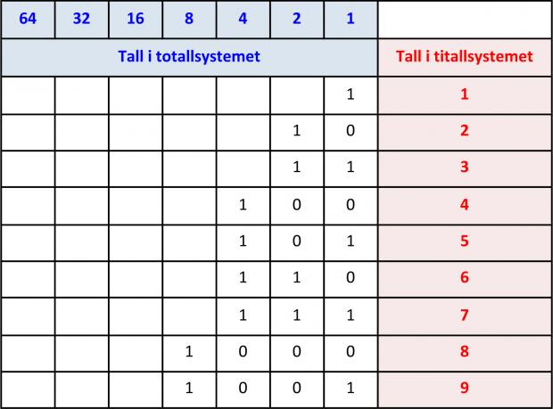
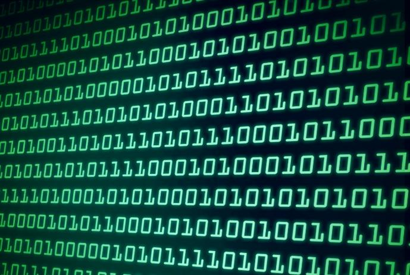
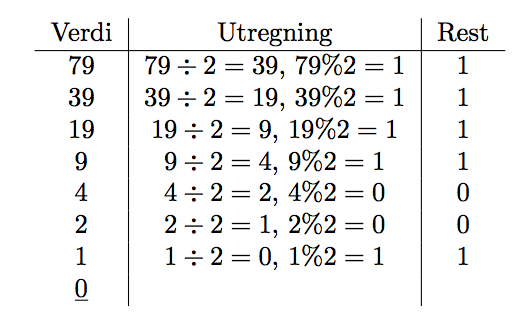
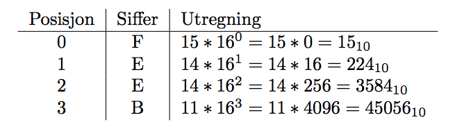

Binærtall
Det binære tallsystem (også totallsystemet) representerer numeriske verdier ved å bruke to symboler, som oftest sifrene 0 og 1.Har grunntallet 2 
Bits
En bit er den minste regneenheten i en datamaskin, og den har enten verdien ett eller null.
Byte
En byte er definert som åtte bitser, det vil si en kombinasjon av åtte ettall eller nuller, som 10001101.
Konventering til Binærtall
Gjør om tall til 0 eller 1 Konventering til Heksadeimal
Gjør om tall til 0-9, A, B,C, D, E, FHeksadeimal har grunntall 16 